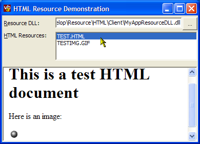

HTML Resource DLL (6K)
HTML Resource DLL (6K)
 HTML Resource Viewer Client (29K)
HTML Resource Viewer Client (29K)
 3 Jan 2002
3 Jan 2002
First Posted

Storing and Showing HTML Resources in a VB Application
Since Internet Explorer 4, it is has been possible to display HTML directly from application resources using the res:// protocol. This article demonstrates how to embed HTML files and images into your application resources to use this function and encapsulate HTML files.
About the res:// Protocol
Internet Explorer since v4 started to support the concept of pluggable protocols. This means that beyond the standard web protocols, such as http and ftp, IE can support any number of other ways of accessing information. If you want to find out more about the different ways you can extend IE, check out the article "Cutting Edge: Pluggable Protocols" published in the January 1999 issue of Microsoft Internet Developer, which shows how to implement various flavours of this functionality (at least for the C/C++ programmer).
The res:// protocol was one scheme introduced at the same time. Basically it allows you to read resources from EXEs or DLLs directly into IE. The most common example of this protocol in use are the various http error screens you get in IE. For example, if you try and navigate to a web page whilst offline (and the page is not available offline) then you'll get the familiar "Web page unavailable" screen. If you look at the properties, you'll see the address for this page looks like this:
res://C:\WINDOWS\System32\shdoclc.dll/offcancl.htm#http://www.vbaccelerator.com/
What this tells IE to do is to load the "offcancl.htm" HTML resource from shdoclc.dll. The part after the hash symbol is read as a parameter by script on the page. If you look at the page itself, you'll see it refers to an image "pagerror.gif". This image is also contained as a resource, as you'll see if you try this URL:
res://C:\WINDOWS\System32\shdoclc.dll/pagerror.gif
Actually, that's not quite all. The res protocol can also be used for displaying other resources in an application. When you use:
res://C:\WINDOWS\System32\shdoclc.dll/pagerror.gif
you're actually telling IE implicitly to look in the RT_HTML (id = 23) section of the DLL for the resource. You can look under any other resource type by adding an explicit resource type id after the DLL name. For example, to extract the Bitmap (bitmaps are stored under type RT_BITMAP = 2) with id 17034 from the DLL, you would do this:
res://C:\WINDOWS\System32\shdoclc.dll/2/17034
Note that if you try to read a resource type which IE doesn't support, such as an Icon or Menu then nothing happens except a page cannot be displayed window.
Therefore if you know how to add resources to an application, you can show them in a WebBrowser control by navigating to a res:// URL.
Adding HTML Resources
For the purposes of this article, I've created a separate DLL to store the HTML resources. The reason for this is that you cannot access Win32 resources within a VB object when it is running in the IDE. If you want to test your application, then it is much easier if the resources are stored in a separate DLL or EXE. Of course, once you're happy with an application there is no problem about compiling the resources into the application and then ditching the external DLL.
The "HTML Resource DLL" download contains the actual HTML resources. The DLL itself is simply an ActiveX DLL with one class and no methods or properties. It only exists as a holder for the resources themselves. The resources are specified in the /Resources subfolder. In this simple example, I included just one HTML document and one image, but you can have as many as you want. The RC (resource compiler) file for this example is as follows:
#define RT_HTML 23 // HTML test.html RT_HTML "test.html" testimg.gif RT_HTML "testimg.gif"
Run this through RC.EXE and you get the compiled .res file (I typically use a batch file to do this). Then it is compiled into the DLL and its ready to test: try the URLs:
res://[DLL full file name]/test.html res://[DLL full file name]/testimg.gif
And you will see that IE picks up the resources.
Building a Client
Once you've done this, then a client is simplicity itself. Just drop a WebBrowser control onto your application form and you can show the HTML. The sample download goes a little bit further and uses resource enumeration functions to display all available HTML resources in a selected DLL. If you pick shdoclc.dll you can even take a look at the resources built into to IE itself (check wcee.htm for some rather useless code).